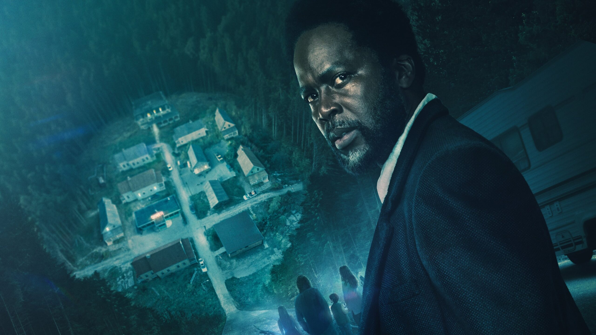

From Origem (2025)

Sinopse
“From Origem” é uma série que mistura suspense psicológico com horror sobrenatural. Ela acompanha a vida de uma comunidade isolada onde eventos misteriosos e assustadores começam a ocorrer, deixando os moradores em constante tensão.
Criador e Elenco Principal
- Criador: John Griffin
- Elenco: Harold Perrineau, Catalina Sandino Moreno, Eion Bailey
Informações Técnicas
- Gênero: Terror, Suspense, Mistério
- Temporadas: 3 (2025)
- Estreia: 20 de Fevereiro de 2022
- Duração média dos episódios: 45 minutos
- Classificação Indicativa: 16 anos
Curiosidades
- A série foi elogiada pela sua atmosfera sombria e narrativa complexa.
- Produzida em parceria com estúdios independentes para garantir maior liberdade criativa.
- Recebeu indicação a prêmios de melhor série de suspense em 2025.
Recepção da Crítica
“From” foi aclamada por sua atmosfera tensa e sua narrativa envolvente. No Rotten Tomatoes, a série possui uma aprovação de 96% por parte da crítica especializada e 80% pelo público. A série é frequentemente comparada com produções como Lost e The Leftovers por seu mistério intrigante e progressão lenta mas recompensadora.
Críticos destacam o roteiro inteligente e a performance de Harold Perrineau como o xerife Boyd como um dos grandes trunfos da série.
Produção e Direção
A série foi criada por John Griffin e produzida por Jack Bender, conhecido por seu trabalho em “Lost”. As locações sombrias e o uso de luz natural contribuem para o clima opressivo da vila onde os personagens estão presos, reforçando o horror psicológico.
Com direção precisa e uso intenso de simbolismos visuais, “From” mergulha em temas como luto, redenção e a natureza do medo.
Impacto e Continuação
“From” rapidamente conquistou uma base de fãs fiel e teorias conspiratórias intensas online. A série foi renovada para uma 3ª temporada em 2025, prometendo expandir o universo e responder às perguntas deixadas em aberto nas temporadas anteriores.
Combinando o sobrenatural com questões humanas profundas, “From” se consolida como uma das séries de suspense mais intrigantes da atualidade.